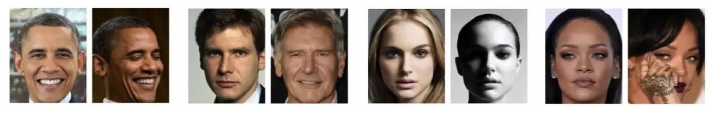
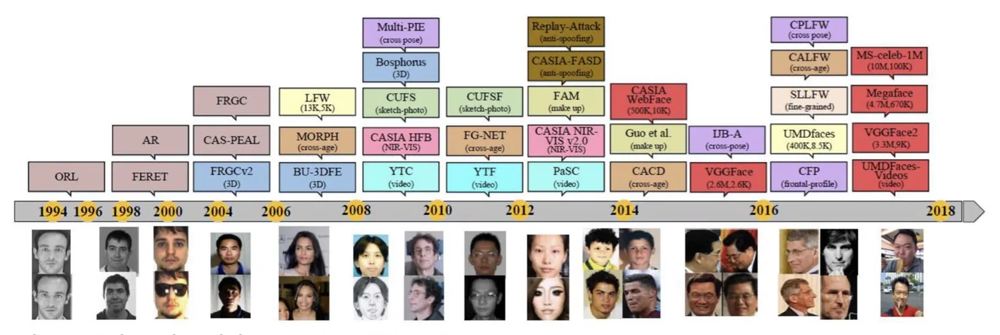
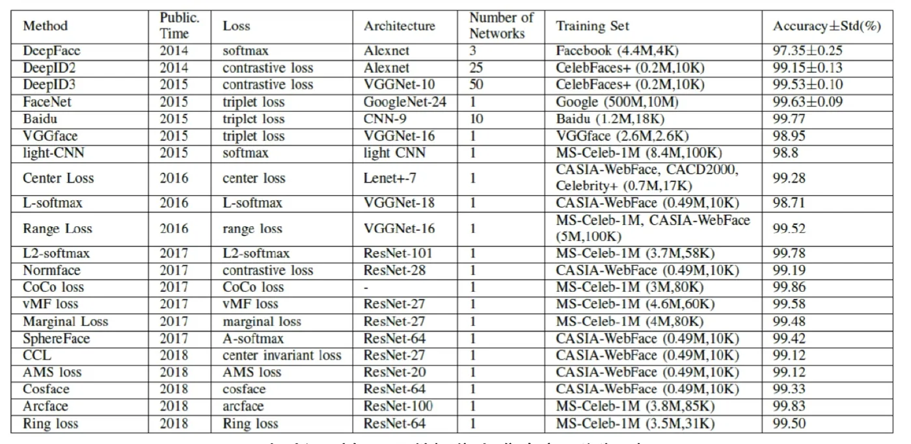
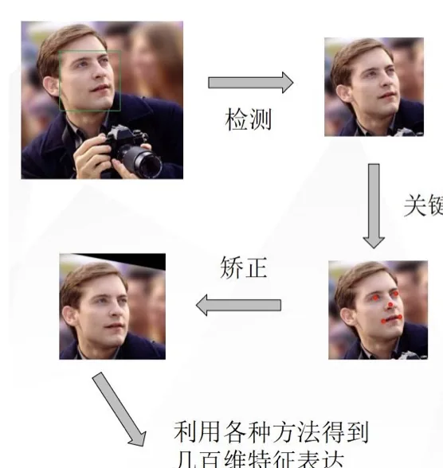

计算机视觉 · 第 8 章 人脸识别
8.1 人脸识别概述与基本流程
这一节给人脸识别开个头：先给它一个定义，看看它作为生物识别技术有哪三个绕不开的特点；再回头看方法是怎么从「人工设计特征」一步步走到「深度卷积网络」的；最后给出贯穿全章的四个步骤——人脸检测、人脸对齐、人脸特征表征与人脸匹配。后面九节，都是沿着这条流程往下拆。
1. 人脸识别是什么
课件给出的定义很直接：人脸识别是基于人的脸部特征信息进行身份识别的一种生物识别技术。它要回答的问题只有一个——这张脸是谁。和指纹、虹膜、语音这些同样用于身份识别的生物特征相比，人脸有三个特点：
- 非侵入性：相比指纹、虹膜或语音识别，人脸识别只需要用户处在相机视野内即可，不需要用户主动配合采集；
- 应用广泛：监控系统、访问控制、欺诈检测、身份认证、社交媒体等场合都在用；
- 高度可变性：人脸图像可变的地方很多——头部姿势、年龄、遮挡、光照、表情等，都会让同一个人的两张照片看起来很不像。
前两点是优势，第三点是要害。整章的技术演进，几乎都是围绕「怎么对付这种高度可变性」展开的：同一个人在不同姿势、光照、表情下差异极大（类内差异大），而不同的人也可能长得相似（类间差异小）——这两句话本章后面还会反复出现。

2. 早期方法：人工特征加机器学习
早期的人脸识别走的是「人工设计特征 + 机器学习」的路子。特征一端靠人设计，比如边、纹理描述量；另一端用主成分分析（PCA）、线性判别分析（LDA）或支持向量机（SVM）这类成熟方法来降维和分类。
这条路的问题在于：人工设计的特征无法在无约束环境中对不同变化情况都提取出稳健的特征。所谓无约束环境，就是拍照的人不配合——姿势随意、光照任意、可能被口罩或眼镜遮挡。为某人脸设计的特征换一种变化就失效了。
课件给出的解决方案是针对每种变化类型设计专用方法，也就是把难题拆开：
- 应对不同年龄的方法，如 U. Park 等（TPAMI 2020）、Z. Li 等（TIFS 2021）；
- 应对不同姿势的方法，如 C. Ding 等（TIST 2016）；
- 应对不同光照条件的方法，如 D. H. Liu 等（PR 2005）、X. Tan 等（TIP 2010）。
这种「一种变化、一个方法」的策略在当时是有效的，但代价是系统越堆越复杂，而且换一个数据集、换一种场景就未必好使。它的根本局限是把「提取特征」这件事交给了人——人能想到的变化总是有限的，而现实世界的变化是无穷的。
3. 近期方法：基于卷积神经网络的深度学习
近期方法的思路完全变了：用非常大型的数据集去训练卷积神经网络，让网络自己学习表征这些数据的最佳特征。特征不再由人设计，而是由数据「长」出来——这正是深度学习在人脸识别上迅速超过传统方法的原因。

这一转变有一个公认的标杆可以看：LFW（Labeled Faces in the Wild）数据集上的准确率。课件用一张不断抬升的曲线记录了这条轨迹——从早期方法的水平一路爬到深度学习方法的高位，人脸验证的准确率在十几年里被推到了接近饱和的程度。

需要留意的是，LFW 上的数字后来逐渐失去区分度：当各家方法都做到 99% 以上时，数据集本身已经区分不出方法的优劣，研究重心随之转向更大规模、更贴近真实场景的数据集。这是本章最后几个经典网络（DeepID、FaceNet）之后发生的事。
4. 人脸识别的基本流程
不管用哪种方法，一个人脸识别系统在工程上都被拆成四步：
- 人脸检测：寻找图像中人脸的位置；
- 人脸对齐（关键点定位）：使用参考点来缩放和裁剪人脸；
- 人脸特征表征：把人脸图像的像素值转换为紧凑且可判别的特征向量；
- 人脸匹配：判断特征之间的相似度。

这四步里，真正被称为「识别算法」的是第三步；但课件特别强调了一句：所以人脸检测与对齐是人脸识别的前提。道理不难理解——如果脸都没找准、没摆正，后面提取出来的特征向量就是把姿势和光照的差异混进了身份信息里，匹配再准也没有意义。本章的结构也正是照这条流程排的：第二节讲检测，第三节起到第五节讲对齐，第六节起讲识别。
本节小结
- 人脸识别是基于人的脸部特征信息进行身份识别的一种生物识别技术，三个特点是：非侵入性、应用广泛、高度可变性。前两点是它的优势，第三点（姿势、年龄、遮挡、光照、表情等变化）是它要解决的核心困难。
- 方法演进分两个时代：早期是人工设计特征 + 机器学习（PCA、LDA、SVM），无法在无约束环境中提取稳健特征，只能针对年龄、姿势、光照等变化分别设计专用方法；近期是基于卷积神经网络的深度学习，用大型数据集训练，让网络自己学出最佳特征。
- LFW 数据集上准确率的持续提升，直观记录了这次方法换代；当各家方法都逼近饱和，研究重心转向更大、更真实的数据集。
- 人脸识别的基本流程是人脸检测 → 人脸对齐 → 人脸特征表征 → 人脸匹配；其中检测与对齐是前提，特征表征才是「识别算法」本身。